01 左手：输入 → 预测 → 映射
真实记录 [2640,2940)，左手 300 个连续有效帧。三面板独立显示尺度，保留输入与预测差异。


GIF 动态预览（5 fps）
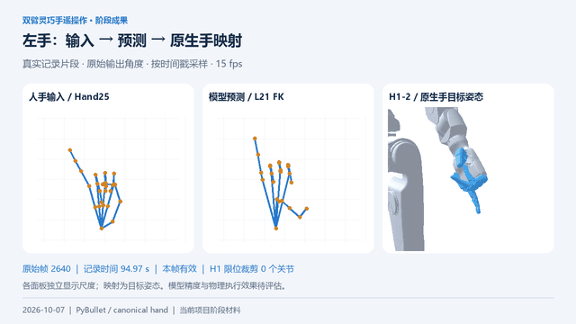
三机器人仿真与统一手部工程链路。10 张图片、4 段短视频，来自现有代码和真实记录。
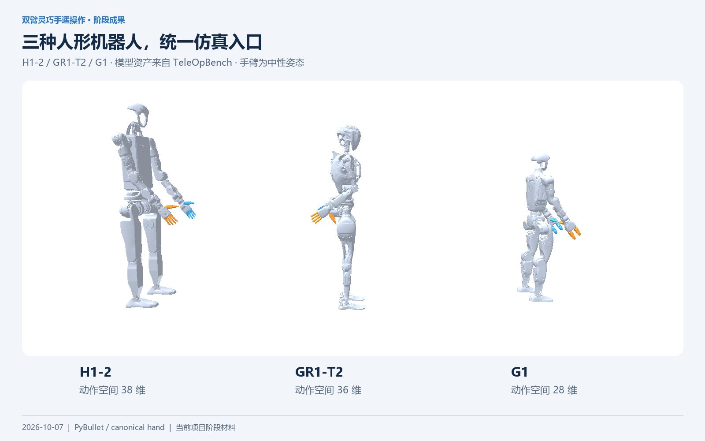
每段 10 秒，H.264 MP4 / 720p / 15 fps / 无声。GIF 为低帧率预览。图中是直接设置的关节目标姿态，手臂保持原姿态。
真实记录 [2640,2940)，左手 300 个连续有效帧。三面板独立显示尺度，保留输入与预测差异。

真实记录 [3465,3765)，右手 300 个连续有效帧。与左手视频取自不同时间段。
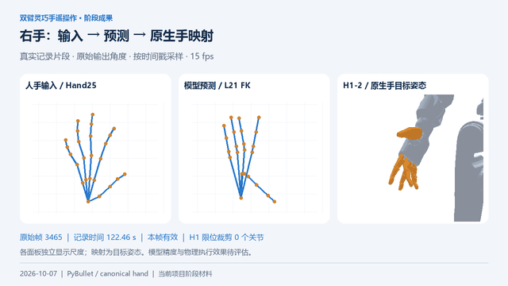
三台机器人同时显示整机缩略图与手部特写。自由度保留 12 / 11 / 7，默认原生限位裁剪。
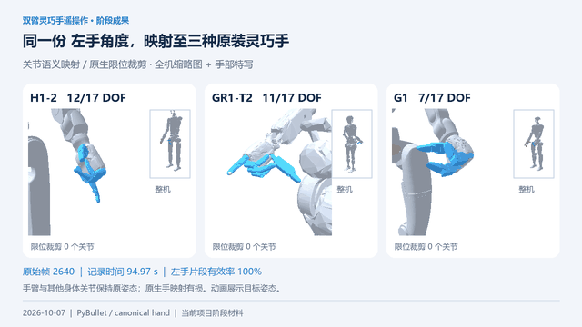
按各自原生关节名称和符号映射，保留原装手结构。覆盖率衡量表达范围，不是准确率。
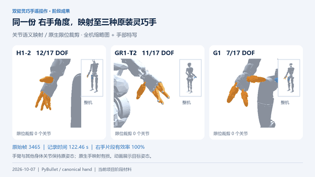
点击图片打开 1600×1000 原图，可直接用于阶段报告或演示文稿。
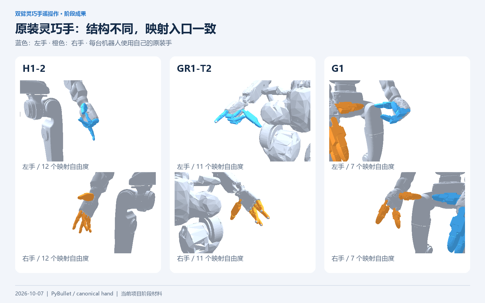
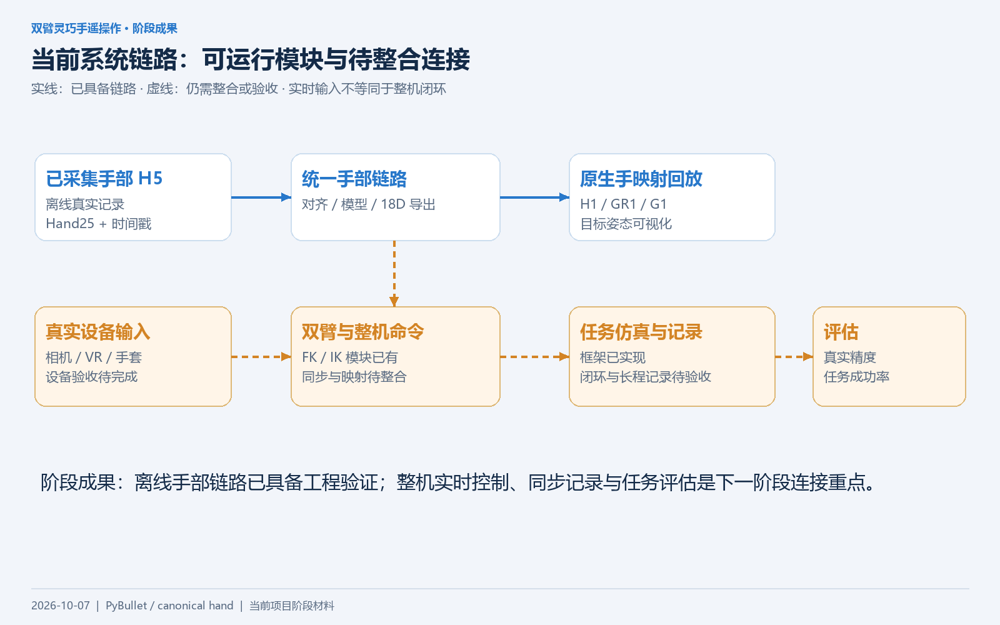
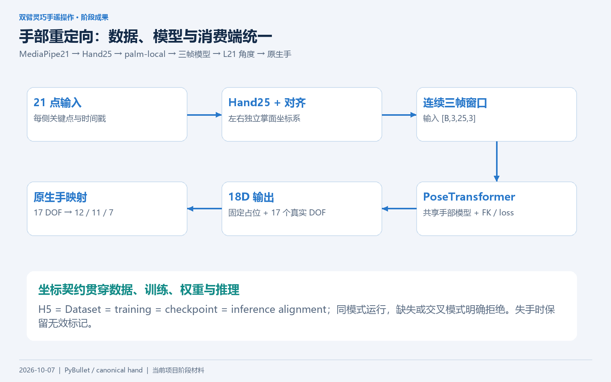
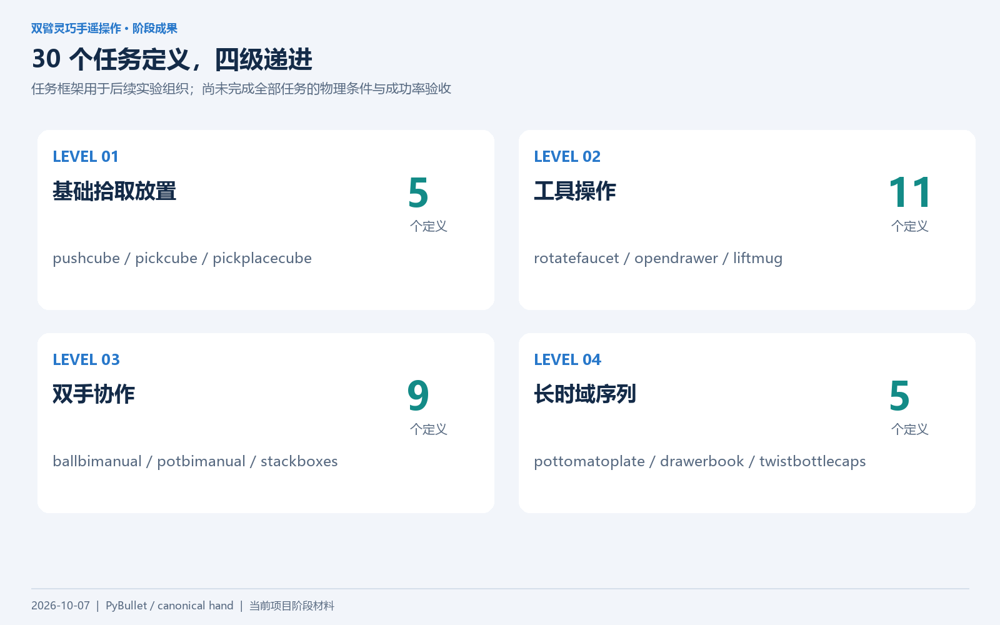
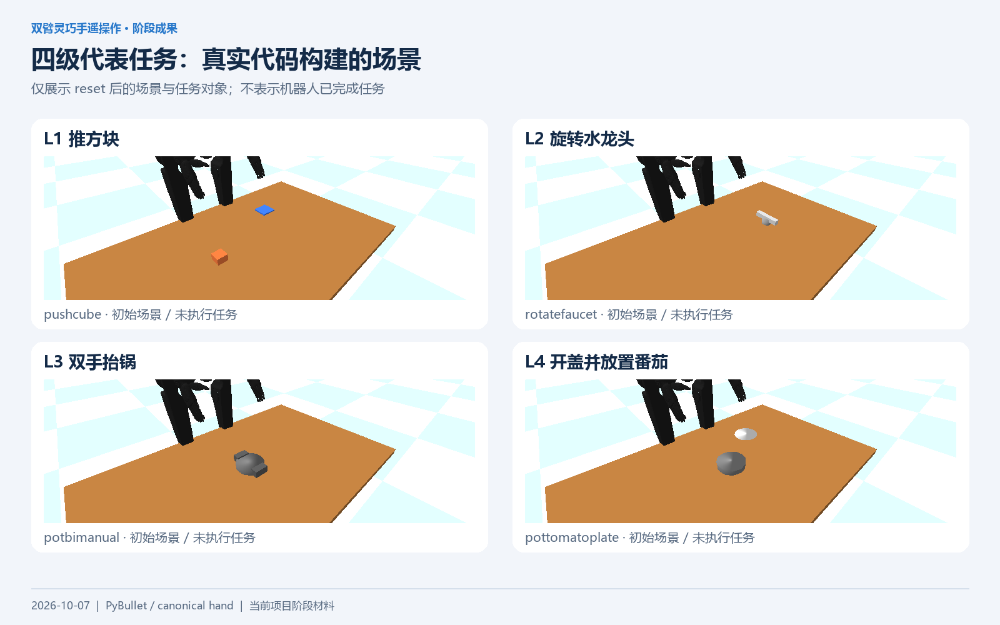
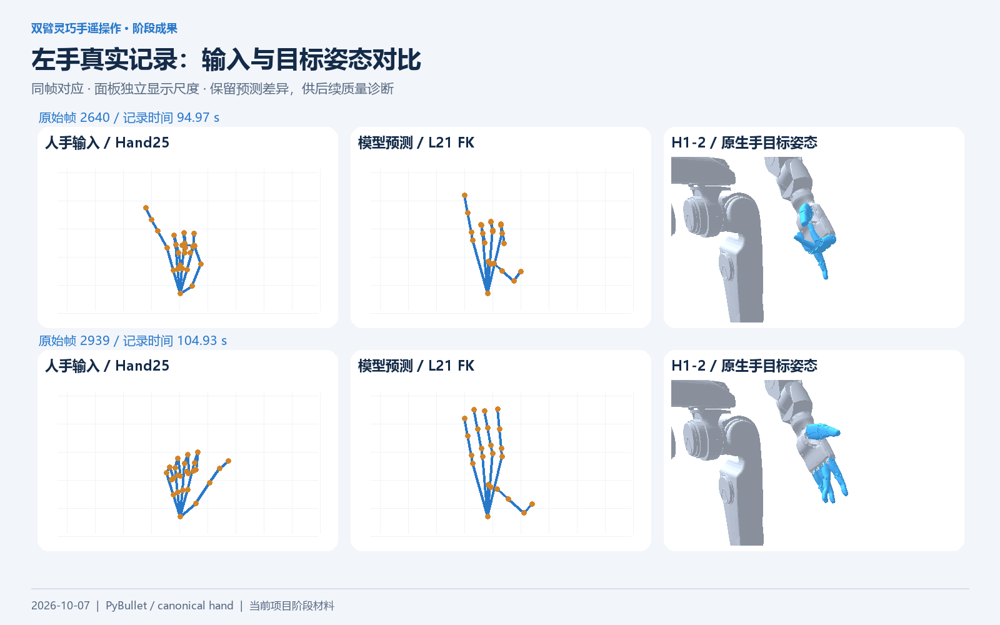
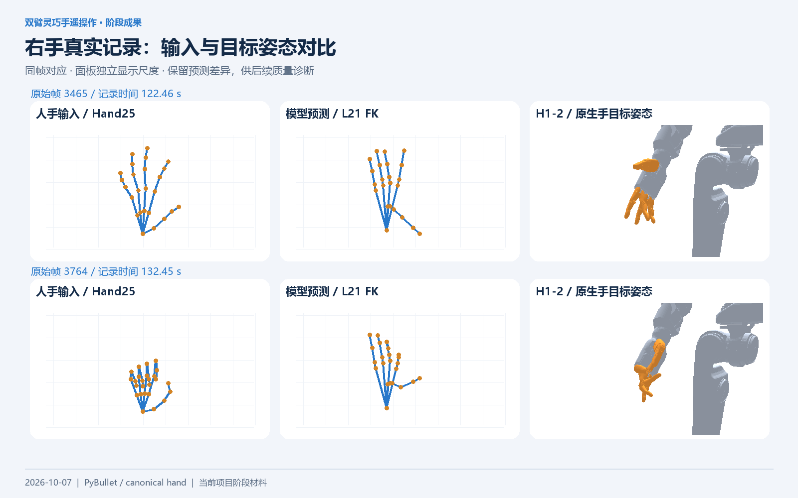
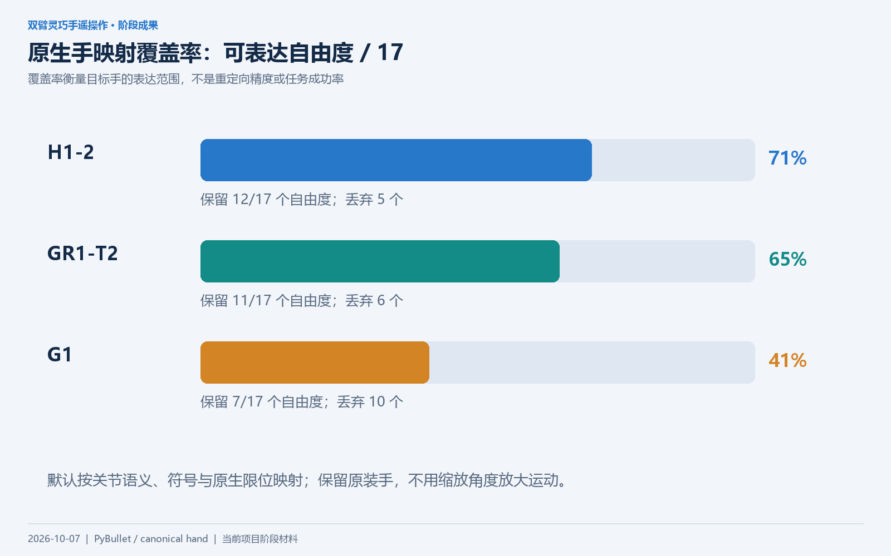
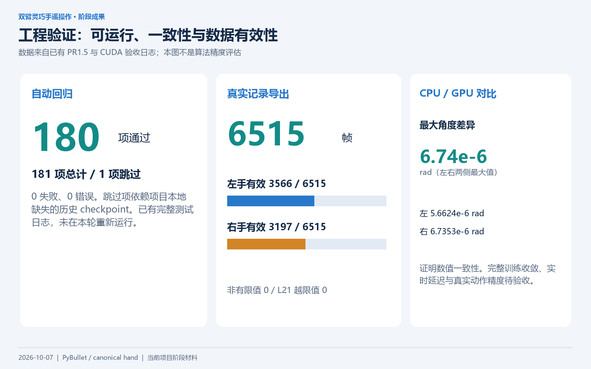